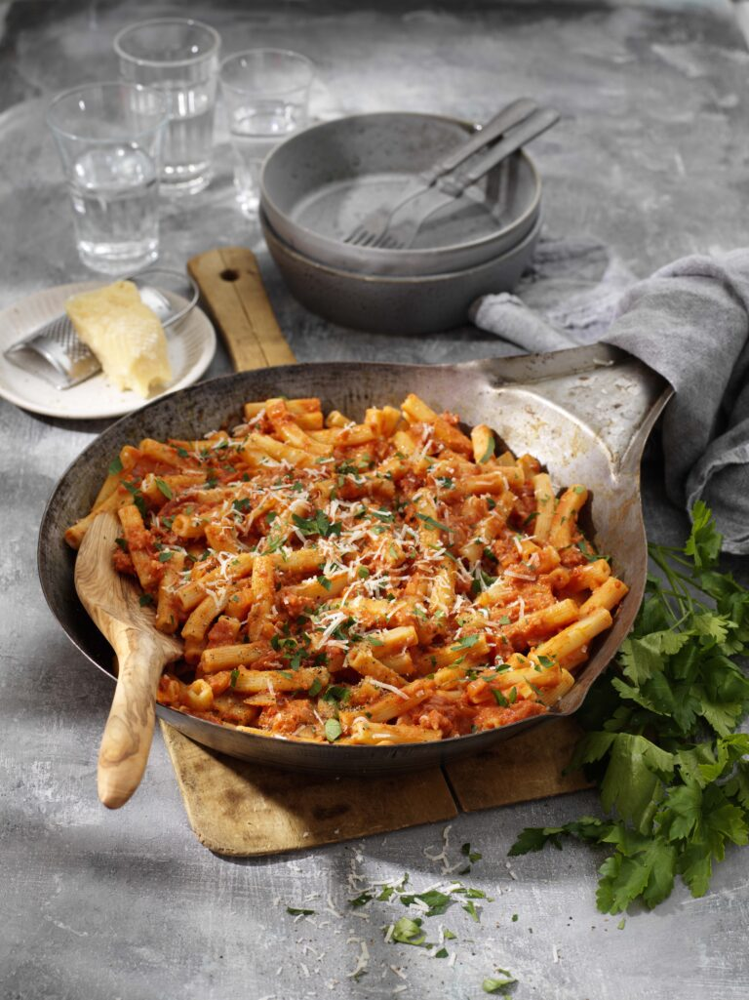
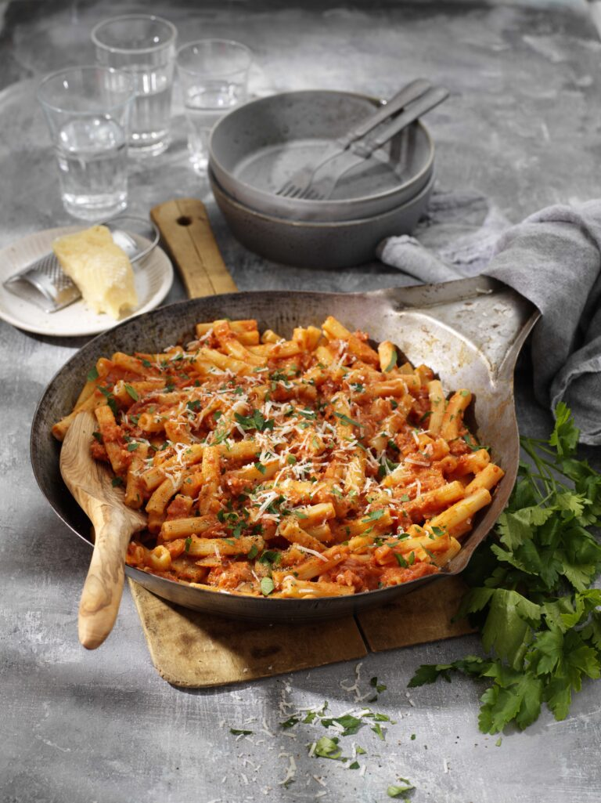
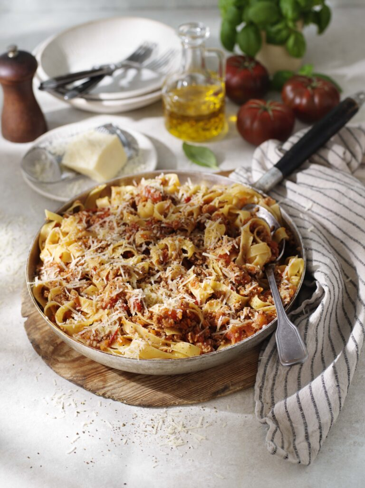
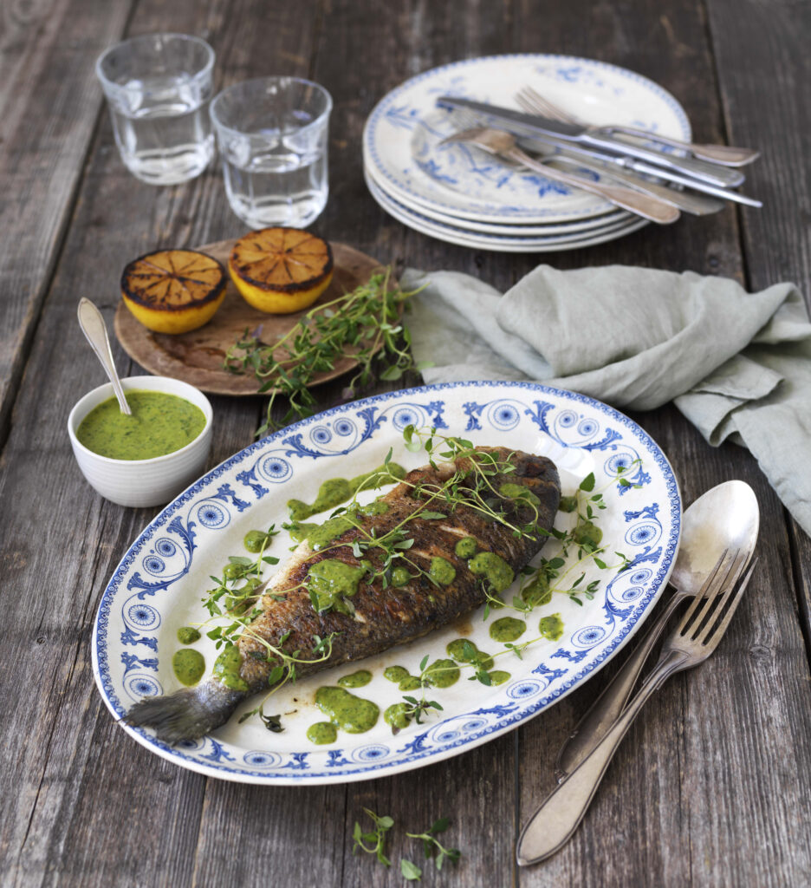
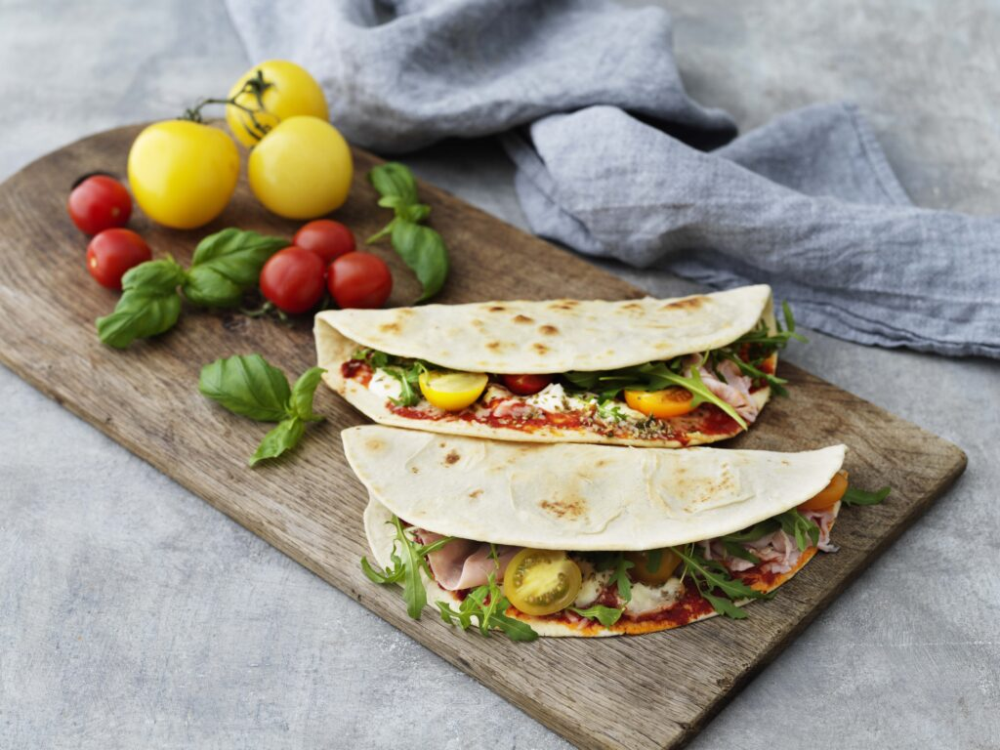

Pasticciata
Klassisk italiensk pasta med krämighet från mascarpone och mustig smak från tomat och salsiccia.
Klassisk italiensk pasta med krämighet från mascarpone och mustig smak från tomat och salsiccia.
Ragú bolognese är en sorts urmoder när det kommer till köttfärssåser. Den är till och med så viktig att ”Accademia Italiana della Cucina” har fastslagit att maträtten ska garantera något som kan tolkas som ett ursprungsrecept. En klassisk ragú bolognese serveras med tagliatelle och aldrig med spaghetti.
Klassisk italiensk maträtt med ursprung från staden Brescia i norra Italien. Alla familjer har sin variant på populära maträtten. Denna variant gjord på kyckling smaksatt med färsk salvia och vitt vin.

Dorata eller seabream är en fantastisk, lagom fet fisk. Stekt dorata med salsa verde är ett riktigt gott middagstips.
Piadina är ett klassiskt italienskt tunnbröd, bakat med olivolja för en härligt mjuk och smakrik textur. Fylld med mild prosciutto cotto, krämig buffelmozzarella och riven parmesan, cocktailtomater och en nypa oregano för att få in en frisk och aromatisk twist. Piadina är en enkel men lyxig måltid som för tankarna direkt till Italien!
